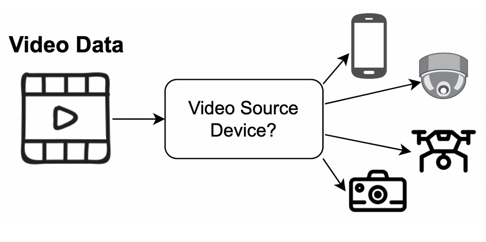

Multimedia Forensics: Source Camera Identification
Keywords: digital forensics, artificial intelligence (AI), computer vision
Personnel: Maryna Veksler, Clara Caspard, Eitan Flor, Ramazan Aygun, Kemal Akkaya
Grant: US National Science Foundation and the Army Research Office.
Project Summary
Multimedia forensics gained attention due to the wide usage of various recording sources and IoT devices. At the same time, the rapid technological developments caused the escalation of forgeries and data tampering of media files. Therefore, the integrity and origin of video and image data coming from cameras which may be on drones or smartphones became one of the key challenges in digital forensics. The lenses’ defects introduced during the manufacturing process produce unique patterns, namely fingerprints, that can be used for source camera identification.
For a long time, the photo response non-uniformity (PRNU) detection techniques were used to generate a unique camera fingerprint and then use it as a ground truth. While PRNU is still widely applied for image source camera detection, it has proven less effective for videos. Deep Learning (DL) techniques, specifically Convolutional Neural Networks (CNNs) have been applied. Unlike PRNUs, CNNs allow to effectively extract camera-specific features from a given set of videos, while reducing the impact of compression effects.
This project focuses on enhancing the accuracy of CNN applications for video source camera identification. Moreover, we analyze the network’s resistance against the source camera falsification attacks, to further strengthen the proposed framework. To improve the network, we conduct an interpretability analysis of the designed video source identification network. As a result, we identify how CNN “makes its decisions” and make it more robust and lightweight.
Diagram

Publications
- Veksler, M., Akkaya, K. and Uluagac, S., 2026. Digital Forensic AI You Can Explain: A Case Study on Video Source Camera Identification. In Proceedings of the IEEE/CVF Winter Conference on Applications of Computer Vision (pp. 7030-7039).
- Veksler, M., Aygun, R.S., Akkaya, K. and Iyengar, S.S., 2024. A Convolutional Neural Network Ensemble for Video Source Camera Forensics. IEEE MultiMedia, 31(2), pp.26-35.
- M. Veksler, R. Aygun, K. Akkaya and S. Iyengar, “Video Origin Camera Identification using Ensemble CNNs of Positional Patches,” 2022 IEEE 5th International Conference on Multimedia Information Processing and Retrieval (MIPR), 2022, pp. 41-46, doi: 10.1109/MIPR54900.2022.00015
- Veksler, M., Caspard, C., Akkaya, K.: “Image-to-Image Translation Generative Adversarial Networks for Video Source Camera Falsification” submitted to EAI International Conference on Digital Forensics & Cyber Crime (ICDF2C) 2022 Conference
- E. Flor, R. Aygun, S. Mercan and K. Akkaya, “PRNU-based Source Camera Identification for Multimedia Forensics,” 2021 IEEE 22nd International Conference on Information Reuse and Integration for Data Science (IRI), 2021, pp. 168-175, doi: 10.1109/IRI51335.2021.00029